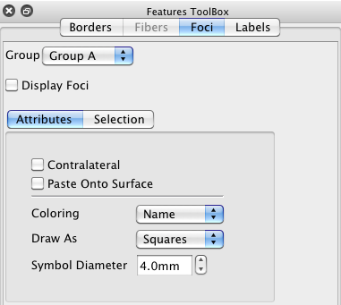

Contralateral check box toggles on display of foci that are currently being displayed on one hemisphere to be displayed on the contralateral hemisphere (on top of that hemisphere's own displayed foci, if any).
Paste Onto Surface moves the foci from their coordinate space to the nearest point directly on the surface displayed.
Coloring sets the Name or Class as the foci color source.
Draw As sets the shape of the foci to Spheres or Squares.
Symbol Diameter sets the size of the foci symbols.

Foci Selection controls group and individual display selection for foci. If a higher level group is selected on or off, all foci below that level will be similarly selected on/off. The All On/Off buttons allow for quick toggling of all foci on or off.